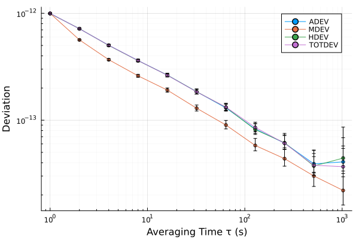

Getting started
This page takes you from a vector of numbers to a plotted, saved stability analysis in the REPL. It assumes SigmaTau is installed (see Home).
1. Wrap your samples in a record
Every analysis starts from a record: the samples plus the sample interval τ₀ in seconds. Phase (time-error) samples in seconds go in a PhaseData; fractional-frequency samples go in a FrequencyData.
using SigmaTau, Random
Random.seed!(1)
τ₀ = 1.0
y = 1e-12 .* randn(4096) # white FM, fractional frequency
x = τ₀ .* cumsum(y) # the same record as phase, in seconds
p = PhaseData(x, τ₀)
f = FrequencyData(y, τ₀)Wrapping is the one way in: the estimators take a record, never a bare vector, so the sample interval always travels with the data. Both kinds of record work everywhere; frequency records are integrated to phase internally.
To read a file instead, use read_phase or read_frequency. They handle two-column text files, CSV and TSV, Stable32 .DAT exports and files that save wrote, and they infer τ₀ from the time column or the header:
p = read_phase("clock.dat") # time and phase columns
p = read_phase("counter.csv"; value_col=3, scaling=1e-9) # ns → s
p = read_phase("phase.txt"; time_col=0, value_col=1, tau0=1.0) # one column, no timeReading and saving data covers the readers, gaps and outliers in detail.
2. Compute a deviation
Each estimator has three call forms:
adev(p) # default: octave-spaced τ up to the estimator's limit
adev(p, Decade) # a named τ grid (a TauMode)
adev(p, 1:10) # any integer range or vector of averaging factors m
r = adev(p, [1, 2, 4, 8, 16, 32, 64]) # τ = m·τ₀StabilityResult(:adev, 7 pts, τ∈[1, 64] s, with CI)
tau dev neff ci_lo ci_hi edf noise
1 9.975e-13 4094 9.853e-13 1.01e-12 3204 WHFM
2 7.16e-13 4092 7.055e-13 7.27e-13 2218 WHFM
4 5.022e-13 4088 4.925e-13 5.125e-13 1258 WHFM
8 3.617e-13 4080 3.523e-13 3.719e-13 685.4 WHFM
16 2.639e-13 4064 2.546e-13 2.744e-13 360 WHFM
32 1.846e-13 4032 1.757e-13 1.95e-13 184.1 WHFM
64 1.302e-13 3968 1.216e-13 1.408e-13 93.76 WHFMThe result is a StabilityResult, shown above as a table. Its fields are plain vectors with one entry per τ: r.tau (seconds), r.dev, r.noise_type, r.ci (the (lo, hi) bounds), r.edf and r.neff.
r.dev[1], r.noise_type[1], r.ci[1](9.97506802996876e-13, :WHFM, (lo = 9.852682904983117e-13, hi = 1.0102127290813909e-12))r.edf holds the equivalent degrees of freedom behind each interval and r.neff the number of terms averaged. Intervals default to 68.3 % (DEFAULT_CONFIDENCE); pass confidence=0.95 for wider ones, or ci=false to skip the intervals when you only want the deviation (the total estimators still identify the noise for their bias correction unless you also pass correct_bias=false).
adev(p; confidence=0.95).ci[1](lo = 9.736731103472895e-13, hi = 1.0225451900489823e-12)3. Compute several at once
stability runs a set of estimators on one record and returns a StabilitySuite, indexed by estimator name:
suite = stability(p; devs=(:adev, :mdev, :hdev, :totdev))
suite[:hdev].dev[1:3]3-element Vector{Float64}:
9.922639555293045e-13
7.185318225011833e-13
5.001738399055482e-13Not sure which estimators you need? See Choosing an estimator.
4. Plot
Loading Plots turns on the plot recipes: plot(result) draws σ(τ) on log-log axes with confidence-interval bars, and plot(suite) overlays the suite.
using Plots
plot(suite)
Plotting and tables shows the other styles: bands, overlays of several clocks, spectra and dynamic maps.
5. Save
save writes records, results and suites as plain text that any tool can read; read_phase reads records back and load reads results and suites.
dir = mktempdir()
save(joinpath(dir, "adev.tsv"), r)
load(joinpath(dir, "adev.tsv")).dev ≈ r.devtrueWhere next
- A drifting clock and the Hadamard family: why drift spoils ADEV and what to use instead.
- Noise, EDF and confidence: what the noise types and intervals mean.
- Reference: every estimator and its keywords.